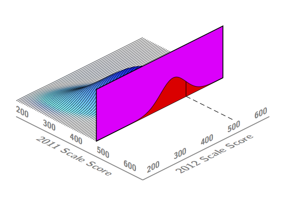
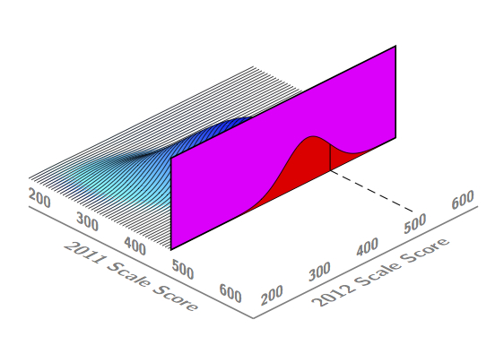
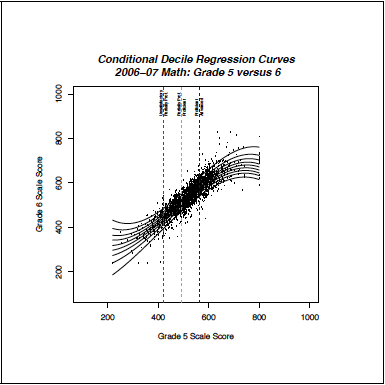
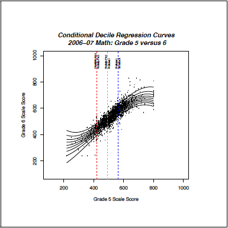

The Washington Growth Model
:
A Technical Overview of the Student Growth Percentile Methodology
April 2013
REPORT CONTENTS:
April 2013
Accountability systems constructed according to federal adequate yearly progress (AYP) requirements currently rely upon annual “snap-shots” of student achievement to make judgments about school quality. Since their adoption, such status measures have been the focus of persistent criticism (Linn, 2003a; Linn, Baker & Betebenner, 2002). Though appropriate for making judgments about the achievement level of students at a school for a given year, they are inappropriate for judgments about educational effectiveness. In this regard, status measures are blind to the possibility of low achieving students attending effective schools. It is this possibility that has led some critics of No Child Left Behind (NCLB) to label its accountability provisions as unfair and misguided and to demand the use of growth analyses as a better means of auditing school quality.
A fundamental premise associated with using student growth for school accountability is that “good” schools bring about student growth in excess of that found at “bad” schools. Students attending such schools - commonly referred to as highly effective/ineffective schools - tend to demonstrate extraordinary growth that is causally attributed to the school or teachers instructing the students. The inherent believability of this premise is at the heart of current enthusiasm to incorporate growth into accountability systems. It is not surprising that the November 2005 announcement by Secretary of Education Spellings for the Growth Model Pilot Program (GMPP) permitting states to use growth model results as a means for compliance with NCLB achievement mandates and the Race to the top competitive grants program were met with great enthusiasm by states (Spellings, 2005).
Following these use cases, the primary thrust of growth analyses over the last decade has been to determine, using sophisticated statistical techniques, the amount of student progress/growth that can be justifiably attributed to the school or teacher - that is, to disentangle current aggregate level achievement from effectiveness (Braun, 2005; Rubin, Stuart and Zanutto, 2004; Ballou, Sanders and Wright, 2004; Raudenbush, 2004). Such analyses, often called value-added analyses, attempt to estimate the teacher or school contribution to student achievement. This contribution, called the school or teacher effect, purports to quantify the impact on achievement that this school or teacher would have, on average, upon similar students assigned to them for instruction. Clearly, such analyses lend themselves to accountability systems that hold schools or teachers responsible for student achievement.
Despite their utility in high stakes accountability decisions, the causal claims of teacher/school effectiveness addressed by value-added models (VAM) often fail to address questions of primary interest to education stakeholders. For example, VAM analyses generally ignore a fundamental interest of stakeholders regarding student growth: How much growth did a student make? The disconnect reflects a mismatch between questions of interest and the statistical model employed to answer those questions. Along these lines, Harris (2007) distinguishes value-added for program evaluation (VAM-P) and value-added for accountability (VAM-A) - conceptualizing accountability as a difficult type of program evaluation. Indeed, the current climate of high-stakes, test-based accountability has blurred the lines between program evaluation and accountability. This, combined with the emphasis of value-added models toward causal claims regarding school and teacher effects has skewed discussions about growth models toward causal claims at the expense of description. Research (Yen, 2007) and personal experience suggest stakeholders are more interested in the reverse: description first that can be used secondarily as part of causal fact finding.
In a survey conducted by Yen (2007), supported by the author’s own experience working with state departments of education to implement growth models, parents, teacher, and administrators were asked what “growth” questions were most of interest to them.
As Yen remarks, all these questions rest upon a desire to understand whether observed student progress is “reasonable or appropriate” (Yen, 2007 p. 281). More broadly, the questions seek a description rather than a parsing of responsibility for student growth. Ultimately, questions may turn to who/what is responsible. However, as indicated by this list of questions, they are not the starting point for most stakeholders.
In the following student growth percentiles and percentile growth projections/trajectories are introduced as a means of understanding student growth in both normative and a criterion referenced ways. With these values calculated we show how growth data can be utilized in both a norm- and in a criterion-referenced manner to inform discussion about education quality. We assert that the establishment of a normative basis for student growth eliminates a number of the problems of incorporating growth into accountability systems providing needed insight to various stakeholders by addressing the basic question of how much a student has progressed (Betebenner, 2008; Betebenner, 2009).
It is a common misconception that to quantify student progress in education, the subject matter and grades over which growth is examined must be on the same scale - referred to as a vertical scale. Not only is a vertical scale not necessary, but its existence obscures concepts necessary to fully understand student growth. Growth, fundamentally, requires change to be examined for a single construct like math achievement across time - growth in what?.
Consider the familiar situation from pediatrics where the interest is on measuring the height and weight of children over time. The scales on which height and weight are measured possess properties that educational assessment scales aspire towards but can never meet.
An infant male toddler is measured at 2 and 3 years of age and is shown to have grown 4 inches. The magnitude of increase - 4 inches - is a well understood quantity that any parent can grasp and measure at home using a simple yardstick. However, parents leaving their pediatrician’s office knowing only how much their child has grown would likely be wanting for more information. In this situation, parents are not interested in an absolute criterion of growth, but instead in a normative criterion locating that 4 inch increase alongside the height increases of similar children. Examining this height increase relative to the increases of similar children permits one to diagnose how (a)typical such an increase is.
Given this reality in the examination of change where scales of measurement are perfect, we argue that it is absurd to think that in education, where scales are at best quasi-interval (Lord, 1975; Yen, 1986) one can/should examine growth differently.
Going further, suppose that scales did exist in education similar to height/weight scales that permitted the calculation of absolute measures of annual academic growth for students. The response to a parent’s question such as, “How much did my child progress?”, would be a number of scale score points - an answer that would leave most parents confused wondering whether the number of points is good or bad. As in pediatrics, the search for a description regarding changes in achievement over time (i.e., growth) is best served by considering a norm-referenced quantification of student growth - a student growth percentile (Betebenner, 2008; Betebenner, 2009).
A student’s growth percentile describes how (a)typical a student’s growth is by examining his/her current achievement relative to his/her academic peers - those students beginning at the same place. That is, a student growth percentile examines the current achievement of a student relative to other students who have, in the past, “walked the same achievement path”. Heuristically, if the state assessment data set were extremely large (in fact, infinite) in size, one could open the infinite data set and select out those students with the exact same prior scores and compare how the selected student’s current year score compares to the current year scores of those students with the same prior year’s scores - his/her academic peers. If the student’s current year score exceeded the scores of most of his/her academic peers, in a normative sense they have done as well. If the student’s current year score was less than the scores of his/her academic peers, in a normative sense they have not done as well.
The four panels of Figure 1. depict what a student growth percentile represents in a situation considering students having only two consecutive achievement test scores.
 

Figure also serves to illustrate the relationship between the state’s assessment scale and student growth percentiles. The scale used by Washington depicted in the panels of Figure 1 is not vertical. Thus the comparisons or subtraction of scale scores for individual students is not supported. However, were such a scale in place, the figure would not change. With or without a vertical scale, the conditional distribution can be constructed. In situations where a vertical scale exists, the increase/decrease in scale score points can be calculated and the growth percentile can be understand alongside this change. For example, were the scales presented in Figure 1 vertical, then one can calculate that the student grew 40 points (from 360 to 400) between 2011 and 2012. This 40 points represents the absolute magnitude of change. Quantifying the magnitude of change is scale dependent. For example, different vertical achievement scales in 2011 and 2012 would yield different annual scale score increases: A scale score increase of 40 could be changed to a scale score increase of 10 using a simple transformation of the vertical scale on which all the students are measured. However, relative to other students, their growth has not changed - their growth percentile is invariant to scale transformations common in educational assessment. Student growth percentiles normatively situate achievement change bypassing questions associated with the magnitude of change, and directing attention toward relative standing which, we would assert, is what stakeholders are most interested in.
To fully understand how many states intend to use growth percentiles to make determinations about whether a student’s growth is sufficient, the next section details specifics of how student growth percentiles are calculated. These calculations are subsequently used to calculate percentile growth projections/trajectories that are used to establish how much growth it will take for each student to reach his/her achievement targets.
Quantile regression is used to establish curvi-linear functional relationships between the cohort’s prior scores and the cohort’s current scores. Specifically, for each grade by subject cohort, quantile regression is used to establish 100 (1 for each percentile) curvi-linear functional relationships between the students grade 3, grade 4, grade 5, and grade 6 prior scores and their grade 7 scores. The result of these 100 separate analyses is a single coefficient matrix that can be employed as a look-up table relating prior student achievement to current achievement for each percentile. Using the coefficient matrix, one can plug in any grade 3, 4, 5, and 6 prior score combination to the functional relationship to get the percentile cutpoints for grade 7 conditional achievement distribution associated with that prior score combination. These cutpoints are the percentiles of the conditional distribution associated with the individual’s prior achievement. Consider a student with the following reading scores:
| Grade 3/2004 | Grade 4/2005 | Grade 5/2006 | Grade 6/2007 | Grade 7/2008 | |
|---|---|---|---|---|---|
| 319 | 318 | 322 | 334 | 336 |
Using the coefficient matrix derived from the quantile regression analyses based upon grade 3, 4, 5, and 6 scale scores as independent variables and the grade 7 scale score as the dependent variable together with this student’s vector of grade 3, 4, 5, and 6 grade scale scores provides the scale score percentile cutpoints associated with the grade 7 conditional distribution for these prior scores.
The percentile cutscores for 7th grade reading in Table are used with the student’s actual grade 7 reading scale score to establish his/her growth percentile. In this case, the student’s grade 7 scale score of 336 lies above the 50th percentile cut and below the 51st percentile cut, yielding a growth percentile of 50. Thus, the progress demonstrated by this student between grade 6 and grade 7 exceeded that of 50 percent of his/her academic peers - those students with the same achievement history. States can qualify student growth by defining ranges of growth percentiles. For example, the Washington Growth Model designates growth percentiles between 35 and 65 as being typical. Using Table , another student with the exact same grade 3, 4, 5, and 6 prior scores but with a grade 7 scale score of 304, would have a growth percentile of 1, which is designated as low.
This example provides the basis for beginning to understand how growth percentiles in the SGP Methodology are used to determine whether a student’s growth is (in)adequate. Suppose that in grade 6 a one-year (i.e., 7th grade) achievement goal/target of proficiency was established for the student. Using the lowest proficient scale score for 7th grade reading, this target corresponds to a scale score of 619. Based upon the results of the growth percentile analysis, this one year target corresponds to 78th percentile growth. Their growth, obviously, is less than this and the student has not met this individualized growth standard.
Building upon the example just presented involving only a one-year achievement target translated into a growth standard, this section extends this basic idea and shows how multi-year growth standards are established based upon pre-established achievement targets/goals. That is, by defining a future (e.g., a 3 year) achievement target for each student, we show how growth percentile analyses can be used to quantify what level of growth, expressed as a per/year growth percentile, is required by the student to reach his/her achievement target. Unique to the SGP Methodology is the ability to stipulate both what the growth standard is as well as how much the student actually grew in a metric that is informative to stakeholders.
Establishing thresholds for growth for each student that can be used to make adequacy judgments requires pre-established achievement targets and a time-frame to reach the target for each student against which growth can be assessed (i.e., growth-to-standard). Adequacy in many contexts has been defined as catching-up and keeping-up:
The previous definitions specify “4 years following the establishment of the achievement target” as the time frame. For example, an non-proficient 3rd grader would be expected to be proficient by 7th grade, assuming a 1 grade/year progression. The first check of the student’s progress occurs in 4th grade, when the student’s growth over the last year is compared against targets calculated to assess their progress along a multi-year time-line. The question asked following the 4th grade for the student is: Did the student become proficient and if not are they on track to become proficient within 3 years?
It is important to note that each student’s achievement targets and time-frame to reach these targets are fixed. However, depending upon the student’s interim rates of growth, the growth percentiles required to reach his/her fixed achievement target are likely going to be adjusted. For example, a 3rd grade non-proficient student in reading (with an achievement target of proficient in reading by the 7th grade) might demonstrate sizable growth between 3rd and 4th grade and still remain non-proficient. However, the question of relevance for state departments of education, given that they did not reach proficiency in 4th grade, is whether they are on track to become proficient within 3 years. Following the 5th grade, if the student isn’t proficient a determination will be made as to whether they are on track to become proficient with 2 years. And following the 6th grade, a determination will be made as to whether they are on track to become proficient in 1 year if they are not already proficient. The destination and the time frame to reach it remain fixed.
As mentioned previously, the calculation of student growth percentiles across all grades and students results in the creation of numerous coefficient matrices that relate prior with current student achievement. These matrices constitute an annually updated statewide historical record of student progress. For the SGP Methodology, they are used to determine what level of percentile growth is necessary for each student to reach future achievement targets. For example, in the calculation of student growth percentiles in 2008 in Washington, the following coefficient matrices are produced:$^5$
To describe how these numerous coefficient matrices are used together to produce 1, 2, 3, and 4 year growth targets, consider, for example, a 2008 4th grade student in reading with 3rd and 4th grade state reading scores of 225 (Well Below Proficient) and 240 (Well Below Proficient), respectively. The following are the steps that transpire over 4 years to determine whether this student is on track to reach proficient.
August 2007 Accountability clock begins requiring students to reach state defined achievement targets within 4 years or by grade 8. In this example, the unsatisfactory 3rd grade (in 2007) student under consideration is expected to be proficient by grade 7 in 2011.
The complexity of the process just described is minimized by the use of the R software environment in conjunction with an open source software
library SGP developed by the state Department of Education to calculate student growth percentiles and percentile growth projections/trajectories
(R Core Team, 2013). Every year, following the loading of the data into the state Department of Education data warehouse,
student growth percentiles and percentile growth trajectories are calculated for each student. Once calculated, these values are easily used to make the
yes/no determinations about the adequacy of each student’s growth relative to his/her fixed achievement targets. These yes/no determinations are then
used in aggregate to determine whether schools have met their AYP targets.
Operational work calculating student growth percentiles with state assessment data yields a large number of coefficient matrices derived from estimating Equation \ref{eqn:quantile}. These matrices, similar to a lookup table, “encode” the relationship between prior and current achievement scores for students in the norming group (usually an entire grade cohort of students for the state) across all percentiles and can be used both to qualify a student’s current level growth as well as predict, based upon current levels of student progress, what different rates of growth (quantified in the percentile metric) will yield for students statewide.
When rates of growth necessary to reach performance standards are investigated, such calculations are often referred to as “growth-to-standard”. These analyses serve a dual purpose in that they provide the growth rates necessary to reach these standards and also shed light on the standard setting procedure as it plays out across grades. To establish growth percentiles necessary to reach different performance/achievement levels, it is necessary to investigate what growth percentile is necessary to reach the desired performance level thresholds based upon the student’s achievement history.
Establishing criterion referenced growth thresholds requires consideration of multiple future growth/achievement scenarios. Instead of inferring that prior student growth is indicative of future student growth (e.g., linearly projecting student achievement into the future based upon past rates of change), predictions of future student achievement are contingent upon initial student status (where the student starts) and subsequent rates of growth (the rate at which the student grows). This avoids fatalistic statements such as, “Student $X$ is projected to be (not) proficient in three years” and instead promotes discussions about the different rates of growth necessary to reach future achievement targets: “In order that Student $X$ reach/maintain proficiency within three years, she will have to demonstrate $n^{th}$ percentile growth consecutively for the next three years.” The change in phraseology is minor but significant. Stakeholder conversations turn from “where will (s)he be” to “what will it take?”


Parallel growth/achievement scenarios are more easily understood with a picture. Using the results of a statewide assessment growth percentile analyses, Figures and depict future growth scenarios in math and reading, respectively, for a student starting in third grade and tracking that student’s achievement time-line based upon different rates of annual growth expressed in the growth percentile metric. The figures depict the four state achievement levels across grades 3 to 10 in shades of dark to light gray (e.g., unsatisfactory, partially proficient, proficient and advanced) together with the 2011 achievement percentiles (inner most vertical axis) superimposed in white. Beginning with the student’s achievement starting point at grade 3 a grade 4 achievement projection is made based upon the most recent growth percentile analyses derived using prior 3rd to 4th grade student progress. More specifically, using the coefficient matrices derived in the quantile regression of grade 4 on grade 3 (see Equation \ref{eqn:quantile}), predictions of what 10th, 35th, 50th, 65th, and 90th percentile growth lead to are calculated. Next, using these seven projected 4th grade scores combined with the student actual 3rd grade score, 5th grade achievement projections are calculated using the most recent quantile regression of grade 5 on grades 3 and 4. Similarly, using these seven projected 5th grade scores, the 5 projected 4th grade scores with the students actual third grade score, achievement projections to the 6th grade are calculated using the most recent quantile regression of grade 6 on grades 3, 4, and 5. The analysis extends recursively for grades 6 to 10 yielding the percentile growth trajectories in Figures and . The figures allow stakeholders to consider what consecutive rates of growth, expressed in growth percentiles, yield for students starting at different points.
Figure depicts percentile growth trajectories in mathematics for a student beginning at the threshold between achievement level 1 and achievement level 2. Based upon the achievement percentiles depicted (the white contour lines), approximately 7 percent of the population of 3rd graders rate as unsatisfactory. Moving toward grade 10, the percentage of unsatisfactory students increases dramatically to near 35 percent. The black lines in the figure represent seven different growth scenarios for the student based upon consecutive growth at a given growth percentile, denoted by the right axis. At the lower end, for example, consecutive 10th percentile growth leaves the student, unsurprisingly, mired in the unsatisfactory category. Consecutive 10th, 35th, 50th, 65th, and 90th percentile growth also leave the student in the unsatisfactory category. This demonstrates how difficult probabilistically, based upon current rates of progress, it is for students to move up in performance level in math statewide. Considering a goal of reaching proficient or career and college readiness (next to top region) by 10th grade, a student would need to demonstrate growth percentiles consecutively in excess of 80 to reach this achievement target indicating how unlikely such a event currently is. In light of NCLB universal proficiency mandates, the growth necessary for non-proficient students to reach proficiency, absent radical changes to growth rates of students statewide, is likely unattainable for a large percentage of non-proficient students.
Figure depicts percentile growth trajectories in reading for a student beginning at the partially proficient/proficient threshold in grade 3. In a normative sense, the performance standards in reading are less demanding than those in mathematics (particularly in the higher grades) with approximately 30 percent of students below proficient in grades 3 to 10. The black lines in the figure represent seven growth scenarios for the hypothetical student based upon consecutive growth at a the given growth percentile. Compared with the growth required in mathematics, more modest growth is required to maintain proficiency in reading. Typical growth (50th percentile growth) appears adequate for such a student to move up slightly into the proficiency category.
Calculation of a student’s growth percentile is based upon the estimation of the conditional density associated with a student’s score at time $t$ using the student’s prior scores at times $1, 2, \ldots, t-1$ as the conditioning variables. Given the conditional density for the student’s score at time $t$, the student’s growth percentile is defined as the percentile of the score within the time $t$ conditional density. By examining a student’s current achievement with regard to the conditional density, the student’s growth percentile normatively situates the student’s outcome at time $t$ taking account of past student performance. The percentile result reflects the likelihood of such an outcome given the student’s prior achievement. In the sense that the student growth percentile translates to the probability of such an outcome occurring (i.e., rarity), it is possible to compare the progress of individuals not beginning at the same starting point. However, occurrences being equally rare does not necessarily imply that they are equally “good.” Qualifying student growth percentiles as “(in)adequate,” “good,” or as satisfying “a year’s growth” is a standard setting procedure requiring external criteria (e.g., growth relative to state performance standards) combined with the wisdom and judgments of stakeholders.
Estimation of the conditional density is performed using quantile regression (Koenker, 2005) Whereas linear regression methods model the conditional mean of a response variable $Y$ , quantile regression is more generally concerned with the estimation of the family of conditional quantiles of $Y$. Quantile regression provides a more complete picture of both the conditional distribution associated with the response variable(s). The techniques are ideally suited for estimation of the family of conditional quantile functions (i.e., reference percentile curves). Using quantile regression, the conditional density associated with each student’s prior scores is derived and used to situate the student’s most recent score. Position of the student’s most recent score within this density can then be used to characterize the student’s growth. Though many state assessments possess a vertical scale, such a scale is not necessary to produce student growth percentiles.
In analogous fashion to the least squares regression line representing the solution to a minimization problem involving squared deviations, quantile regression functions represent the solution to the optimization of a loss function (Koenker, 2005). Formally, given a class of suitably smooth functions, $\cal{G}$, one wishes to solve
where $t_i$ indexes time, $Y$ are the time dependent measurements, and $\rho_{\tau}$ denotes the piecewise linear loss function defined by
The elegance of the quantile regression Expression \ref{eqn:quantmin} can be seen by considering the more familiar least squares estimators. For example, calculation of $\textit{arg min} \sum_ {i=1}^n (Y_i - \mu)^2$ over $\mu \in \mathbb{R}$ yields the sample mean. Similarly, if $\mu(x) = x^{\prime} \beta$ is the conditional mean represented as a linear combination of the components of $x$, calculation of $\textit{arg min} \sum_{i=1}^n (Y_i - x_i^{\prime} \beta)^2$ over $\beta \in \mathbb{R}^p$ gives the familiar least squares regression line. Analogously, when the class of candidate functions $\cal{G}$ consists solely of constant functions, the estimation of Expression~\ref{eqn:quantmin} gives the $\tau$th sample quantile associated with $Y$. By conditioning on a covariate $x$, the $\tau$th conditional quantile function, $Q_y ( \tau | x)$, is given by
In particular, if $\tau=0.5$, then the estimated conditional quantile line is the median regression line.$^9$
Following Wei & He (2006), we parametrize the conditional quantile functions as a linear combination of B-spline cubic basis functions. B-splines are employed to accommodate non-linearity, heteroscedasticity and skewness of the conditional densities associated with values of the independent variable(s). B-splines are attractive both theoretically and computationally in that they provide excellent data fit, seldom lead to estimation problems (Harell, 2001, p. 20), and are simple to implement in available software.
Figure gives a bivariate representation of linear and B-splines parametrization of decile growth curves. The assumption of linearity imposes conditions upon the heteroscedasticity of the conditional densities. Close examination of the linear deciles indicates slightly greater variability for higher grade 5 scale scores than for lower scores. By contrast, the B-spline based decile functions better capture the greater variability at both ends of the scale score range together with a slight, non-linear trend to the data.
 

Calculation of student growth percentiles is performed using R (R Core Team , 2013), a language and environment for statistical computing, with SGP
package (Betebenner, VanIwaarden, Domingue & Shang, 2013). Other possible software (untested with regard to student growth percentiles) with quantile regression
capability include SAS and Stata. Estimation of student growth percentiles is conducted using all available prior data, subject to certain suitability conditions.
Given assessment scores for $t$ occasions, ($t \geq 2$), the $\tau$-th conditional quantile for $Y_ t$ based upon $Y_ {t-1}, Y_ {t-2}, \ldots, Y_1$ is given by
where $\phi_{i,j}$, $i=1,2,3$ and $j=1, \ldots, t-1$ denote the B-spline basis functions. Currently, bases consisting of 7 cubic polynomials are used to “smooth” irregularities found in the multivariate assessment data. A bivariate rendering of this is found is Figure where linear and B-spline conditional deciles are presented. The cubic polynomial B-spline basis functions model the heteroscedasticity and non-linearity of the data to a greater extent than is possible using a linear parametrization.
Student growth percentiles possess a number of attractive properties from both a theoretical as well as a practical perspective. Foremost among practical considerations is that the percentile descriptions are familiar and easily communicated to teachers and other non-technical stakeholders. Furthermore, implicit within the percentile quantification of student growth is a statement of probability. Questions of “how much growth is enough?” or “how much is a year’s growth?” ask stakeholders to establish growth percentile thresholds deemed adequate. These thresholds establish growth standards that translate to probability statements. In this manner, percentile based growth forms a basis for discussion of rigorous yet attainable growth standards for all children supplying a normative context for Linn’s (2003) existence proof with regard to student level growth.
In addition to practical utility, student growth percentiles possess a number of technical attributes well suited for use with assessment scores. The more important theoretical properties of growth percentiles include:
Robustness to outliers Estimation of student growth percentiles are more robust to outliers than is traditionally the case with conditional mean estimation. Analogous to the property of the median being less influenced by outliers than is the median, conditional quantiles are robust to extreme observations. This is due to the fact that influence of a point on the $\tau$-th conditional quantile function is not proportional (as is the case with the mean) to the distance of the point from the quantile function but only to its position above or below the function (Koenker, 2005, p. 44).
Uncorrelated with prior achievement] Analogous to least squares derived residuals being uncorrelated with independent variables, student growth percentiles are not correlated with prior achievement. This property runs counter to current multilevel approaches to measuring growth with testing occasion nested within students (Singer & Willet, 2003). These models, requiring a vertical scale, fit lines with distinct slopes and intercepts to each student. The slopes of these lines represent an average rate of increase, usually measured in scale score points per year, for the student. Whereas a steeper slope represents more learning, it is important to understand that using a normative quantification of growth, one cannot necessarily infer that a low achieving student with a growth percentile of 60 “learned as much” as a high achieving student with the same growth percentile. Growth percentiles bypass questions associated with magnitude of learning and focus on normatively quantifying changes in achievement.
Equivariance to monotone transformation of scale] An important attribute of the quantile regression methodology used to calculate student growth percentiles is their invariance to monotone transformations of scale. This property, denoted by (Koenker, 2005) as equivariance to monotone transformations is particularly helpful in educational assessment where a variety of scales are present for analysis, most of which are related by some monotone transformation. For example, it is a common misconception that one needs a vertical scale in order to calculate growth. Because vertical and non-vertical scales are related via a monotone transformation, the student growth percentiles do not change given such alterations in the underlying scale. This result obviates much of the discussion concerning the need for a vertical scale in measuring growth.$^{10}$
Formally, given a monotone transformation $h$ of a random variable $Y$,
This result follows from the fact that $\Pr(T < t|X) = \Pr(h(T) < h(t)|X)$ for monotone $h$. It is important to note that equivariance to monotone transformation does not, in general, hold with regard to least squares estimation of the conditional mean. That is, except for affine transformations $h$, $E(h(Y)|X) \not=h(E(Y|X))$. Thus, analyses built upon mean based regression methods are, to an extent, scale dependent.
Ballou, D., Sanders, W., and Wright, P. (2004). Controlling for student background in value-added assessment for teachers. Journal of Educational and Behavioral Statistics, 29(1):3765.
Betebenner, D. W. (2008). Toward a normative understanding of student growth. In Ryan, K. E. and Shepard, L. A. (Eds.), The Future of Test-Based Educational Accountability, pages 155170. Taylor & Francis, New York.
Betebenner, D. W. (2009). Norm- and criterion-referenced student growth. Educational Measurement: Issues and Practice, 28(4):4251.
Betebenner, D. W., VanIwaarden A. R., Domingue, B., and Shang, Y. (2013). SGP: An R Package for the Calculation and Visualization of Student Growth Percentiles & Percentile Growth Trajectories. R package version 1.2-0.0. URL http://schoolview.github.com/SGP/
Braun, H. I. (2005). Using student progress to evaluate teachers: A primer on value-added models. Technical report, Educational Testing Service, Princeton, New Jersey.
Harrell, F. E. (2001). Regression Modeling Strategies. Springer, New York.
Harris, D. N. (2007). The policy uses and policy validity of value-added and other teacher quality measures. Technical report, Educational Testing Service, Princeton, NJ.
Koenker, R. (2005). Quantile Regression. Cambridge University Press, Cambridge.
Linn, R. L. (2003a). Accountability: Responsibility and reasonable expectations. Technical report, Center for the Study of Evaluation, CRESST, Los Angeles, CA.
Linn, R. L. (2003b). Accountability: Responsibility and reasonable expectations. Presidential address to the annual meeting of the American Educational Research Association, Chicago, April 23, 2003.
Linn, R. L., Baker, E. L., and Betebenner, D. W. (2002). Accountability systems: Implications of requirements of the No Child Left Behind Act of 2001. Educational Researcher, 31(6):316.
Lord, F. M. (1975). The ability scale in item characteristic curve theory. Psychometrika, 20:299326.
R Core Team (2013). R: A language and environment for statistical computing. R Foundation for Statistical Computing, Vienna, Austria. URL http://www.R-project.org/.
Raudenbush, S. W. (2004). What are value-added models estimating and what does this imply for statistical practice? Journal of Educational and Behavioral Statistics, 29(1):121129.
Rubin, D. B., Stuart, E. A., and Zanutto, E. L. (2004). A potential outcomes view of value-added assessment in education. Journal of Educational and Behavioral Statistics, 29(1):103116.
Singer, J. D. and Willett, J. B. (2003). Applied Longitudinal Data Analysis. Oxford University Press, New York.
Spellings, M. (2005). Secretary spellings announces growth model pilot. Retrieved August 7, 2006 from http://www.ed.gov/news/pressreleases/2005/11/1182005.html.
Wei, Y. and He, X. (2006). Conditional growth charts. The Annals of Statistics, 34(5):20692097.
Yen, W. M. (1986). The choice of scale for educational measurement: An IRT perspective. Journal of Educational Measurement, 23:299325.
Yen, W. M. (2007). Vertical scaling and No Child Left Behind. In Dorans, N. J., Pommerich, M., and Holland, P. W. (Eds.), Linking and Aligning Scores and Scales, pages 273283. Springer, New York.